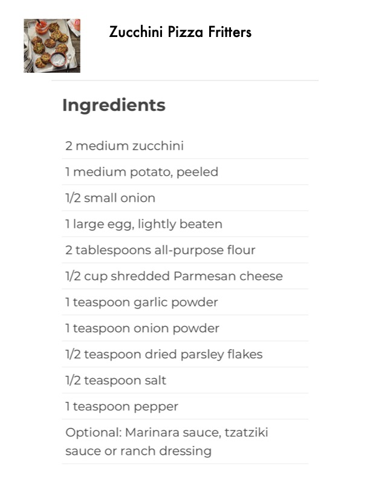

Zucchini Pizza Fritters

Original cookbook page 203
Air-fried or oven-baked zucchini and potato fritters with Parmesan cheese, served with optional marinara, tzatziki, or ranch dressing.
Cook: 15-20 minutes
Ingredients
- 2 medium zucchini
- 1 medium potato, peeled
- 1/2 small onion
- 1 large egg, lightly beaten
- 2 tablespoons all-purpose flour
- 1/2 cup shredded Parmesan cheese
- 1 teaspoon garlic powder
- 1 teaspoon onion powder
- 1/2 teaspoon dried parsley flakes
- 1/2 teaspoon salt
- 1 teaspoon pepper
- Optional: Marinara sauce, tzatziki sauce or ranch dressing
Instructions
- Preheat air fryer to 400°. Coarsely grate zucchini, potato and onion. Place grated vegetables on a double thickness of cheesecloth or a clean tea towel; bring up corners and squeeze out any liquid. Transfer to a large bowl; stir in the egg, flour, Parmesan, garlic powder, onion powder, parsley, salt and pepper. Form mixture into 1/4-cup patties.
- In batches, place patties in a single layer onto greased tray in air-fryer basket. Cook until lightly browned, 15-20 minutes. Serve with sauce if desired.
- Oven method: Preheat oven to 400°. Place fritters on a parchment-lined baking sheet. Bake until golden brown, 15-20 minutes.
Recipe #203 from collection